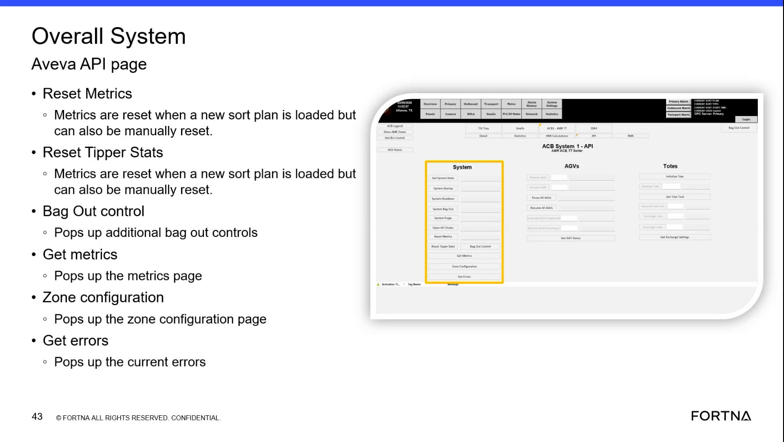

| Procedure ID | proc_reset_system_metrics_overall_system_aveva_api_v1 |
|---|---|
| Title | Reset system metrics from the Overall System Aveva API page |
| Procedure Type | operation |
| Primary Role | operator |
| Support Safe | Yes |
| Capability Tags | fleet_system_status |
| Access Surface | aveva_hmi |
| Audience Roles | operator |
| Failure Pattern Tags | None |
| Validation Status | needs_sme_review |
| Merge Status | source_finalized |
On the AVEVA HMI page labeled “Overall System Aveva API”, use “Reset Metrics” (and optionally “Reset Tipper Stats”) to clear metrics so the next metrics retrieval reflects the current sort plan state. Metrics also reset automatically when a new sort plan is loaded.
Use when the system metrics shown on the “Overall System Aveva API” page need to be cleared/restarted so the next metrics retrieval reflects the current sort plan state. Metrics also reset automatically when a new sort plan is loaded.

Responsible role: operator
Instruction:
Open the AVEVA HMI page labeled “Overall System Aveva API”.
Expected result:
The page displays the “Reset Metrics” control and the “Reset Tipper Stats” control.
Responsible role: operator
Instruction:
Click the control labeled “Reset Metrics”.
Expected result:
The metrics are reset on the page (the page indicates metrics are reset).
Stop or Escalate If:
Responsible role: operator
Instruction:
If needed, click “Reset Tipper Stats” on the same “Overall System Aveva API” page.
Expected result:
Tipper stats are reset on the page (tipper metrics are cleared so they can be re-collected).
Stop or Escalate If:
Responsible role: operator
Instruction:
Stop once the reset action has been performed and the page is ready for the next metrics retrieval (for example, use “Get metrics” if you need to repopulate the metrics view).
Expected result:
The page is ready for the next metrics retrieval action (e.g., “Get metrics” is available to repopulate the metrics view).